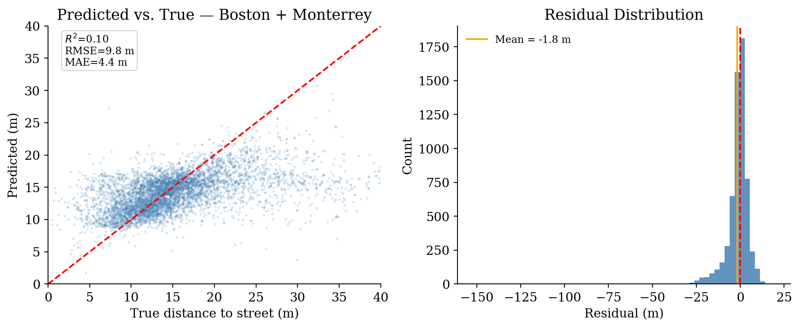

import glob, warnings
import numpy as np
import pandas as pd
import geopandas as gpd
from pathlib import Path
warnings.filterwarnings("ignore")
DATA = (
"/Users/legariapena.j/Library/CloudStorage/GoogleDrive-legariapena.j@husky.neu.edu/"
"Shared drives/Cool and Carbon Free Africa/Building Image Datasets/data"
)
PARENT_PATH_EXPORT = Path("/Users/legariapena.j/Documents/imageable-2026/imageable/Imageable-paper-clean-notebooks/dummy_data")
CKPT_OUT = PARENT_PATH_EXPORT/"distance_regressor_8feat.pth"
FEATURE_COLS = [
"projected_area", "shape_length", "n_vertices", "complexity",
"unprojected_area", "vertices_per_area", "latitude_difference", "longitude_difference",
]
N_PER_CITY = 3000 # buildings sampled per city — adjust freely
RANDOM_STATE = 42Training the street distance model
In this notebook I train the neural network that predicts the distance from a building’s centroid to the nearest street using 8 footprint features. I use buildings from Boston and Monterrey, and the true distances are computed from each city’s cached street network. An 80/20 random split is used for training and validation.
Parameters
Opening the footprint batches
def load_city_batches(city_data_dir: str, glob_pattern: str, n_sample: int, seed: int) -> gpd.GeoDataFrame:
files = sorted(glob.glob(f"{city_data_dir}/{glob_pattern}"))
gdfs = [gpd.read_file(f).to_crs(4326)[FEATURE_COLS + ["geometry"]] for f in files]
gdf = gpd.GeoDataFrame(pd.concat(gdfs, ignore_index=True), crs=4326)
if n_sample and len(gdf) > n_sample:
gdf = gdf.sample(n=n_sample, random_state=seed).reset_index(drop=True)
return gdf
boston = load_city_batches(f"{DATA}/boston", "Images */building_data_*_clean.geojson", N_PER_CITY, RANDOM_STATE)
monterrey = load_city_batches(f"{DATA}/monterrey", "Images */building_data_*.geojson", N_PER_CITY, RANDOM_STATE)
boston["city"] = "boston"
monterrey["city"] = "monterrey"
print(f"Boston : {len(boston):,} buildings")
print(f"Monterrey : {len(monterrey):,} buildings")Boston : 3,000 buildings
Monterrey : 3,000 buildingsComputing the true distances to the street
def local_utm_epsg(lon: float, lat: float) -> int:
zone = int(np.floor((lon + 180) / 6) + 1)
return 32600 + zone if lat >= 0 else 32700 + zone
def add_true_distances(gdf: gpd.GeoDataFrame, street_network_path: str) -> gpd.GeoDataFrame:
sn = gpd.read_file(street_network_path).to_crs(4326)
fp_proj = gdf.to_crs(3857)
c = fp_proj.geometry.centroid
epsg = local_utm_epsg(float(c.to_crs(4326).x.median()), float(c.to_crs(4326).y.median()))
print(f" EPSG:{epsg}")
fp_m = gdf.to_crs(epsg)
sn_m = sn[["geometry"]].to_crs(epsg)
centroids = gpd.GeoDataFrame(
{"_idx": np.arange(len(fp_m))}, geometry=fp_m.geometry.centroid, crs=epsg
)
joined = centroids.sjoin_nearest(sn_m, how="left", distance_col="dist_m")
per_building = joined.groupby("_idx", sort=True)["dist_m"].min()
gdf = gdf.copy()
gdf["true_dist_m"] = per_building.to_numpy(dtype=np.float32)
return gdf
print("Boston street distances...")
boston = add_true_distances(boston, f"{DATA}/boston/street_network/boston_street_network.geojson")
print("Monterrey street distances...")
monterrey = add_true_distances(monterrey, f"{DATA}/monterrey/street_network/monterrey_street_network.geojson")
for name, gdf in [("Boston", boston), ("Monterrey", monterrey)]:
d = gdf["true_dist_m"]
print(f"{name}: mean={d.mean():.1f} m median={d.median():.1f} m max={d.max():.1f} m")Boston street distances...
EPSG:32619
Monterrey street distances...
EPSG:32614
Boston: mean=13.5 m median=12.2 m max=81.9 m
Monterrey: mean=18.3 m median=15.8 m max=166.7 mCombining both cities
combined = gpd.GeoDataFrame(
pd.concat([boston, monterrey], ignore_index=True), crs=4326
)
combined = combined[combined["true_dist_m"].notna()].reset_index(drop=True)
X = combined[FEATURE_COLS].to_numpy(dtype=np.float32)
y = combined["true_dist_m"].to_numpy(dtype=np.float32)
mask = np.isfinite(y) & np.all(np.isfinite(X), axis=1)
X, y = X[mask], y[mask]
print(f"Total buildings : {len(X):,}")
print(f" Boston : {(combined['city']=='boston')[mask].sum():,}")
print(f" Monterrey : {(combined['city']=='monterrey')[mask].sum():,}")
print(f"Distance range : {y.min():.1f} – {y.max():.1f} m (mean {y.mean():.1f})")Total buildings : 6,000
Boston : 3,000
Monterrey : 3,000
Distance range : 0.0 – 166.7 m (mean 15.9)Training the model (80/20 random split)
from imageable._models.distance_to_streets_wrapper import DistanceRegressorWrapper, train_distance_regressor
wrapper = DistanceRegressorWrapper(
input_dim=8,
hidden_sizes=(128, 128),
device=None,
model_path=None,
target_mode="log1p",
)
# Force training from scratch
def _load_scratch():
if wrapper.model is None:
wrapper.model = wrapper._build().to(wrapper.device)
wrapper._loaded = True
wrapper.load_model = _load_scratch
train_distance_regressor(
X, y, wrapper,
epochs=1000, batch_size=128, lr=1e-3,
ckpt_out=CKPT_OUT, val_split=0.2, seed=RANDOM_STATE,
target_mode="log1p",
loss_type="huber",
)
print(f"Checkpoint saved to:\n {CKPT_OUT}")Checkpoint saved to:
/Users/legariapena.j/Documents/imageable-2026/imageable/Imageable-paper-clean-notebooks/dummy_data/distance_regressor_8feat.pthEvaluation
from sklearn.metrics import r2_score, mean_squared_error, mean_absolute_error
import matplotlib.pyplot as plt
wrapper_eval = DistanceRegressorWrapper(input_dim=8, hidden_sizes=(128, 128), model_path=CKPT_OUT)
wrapper_eval.load_model()
preds = np.clip(wrapper_eval.predict(X), 0, 150)
mask_f = np.isfinite(y) & np.isfinite(preds)
r2 = r2_score(y[mask_f], preds[mask_f])
rmse = np.sqrt(mean_squared_error(y[mask_f], preds[mask_f]))
mae = mean_absolute_error(y[mask_f], preds[mask_f])
residuals = preds[mask_f] - y[mask_f]
print(f"n : {mask_f.sum():,}")
print(f"R² : {r2:.3f}")
print(f"RMSE : {rmse:.2f} m")
print(f"MAE : {mae:.2f} m")
print(f"Bias : {residuals.mean():.2f} m")
plt.rcParams.update({"font.family": "serif", "font.size": 11,
"axes.spines.top": False, "axes.spines.right": False})
upper = float(np.nanmax([y[mask_f].max(), preds[mask_f].max()])) * 1.05
fig, (ax1, ax2) = plt.subplots(1, 2, figsize=(10, 4.2))
ax1.scatter(y[mask_f], preds[mask_f], s=5, alpha=0.2, color="steelblue", edgecolors="none", rasterized=True)
ax1.plot([0, upper], [0, upper], "r--", lw=1.5)
ax1.set_xlim(0, 40); ax1.set_ylim(0, 40)
ax1.set_xlabel("True distance to street (m)"); ax1.set_ylabel("Predicted (m)")
ax1.set_title("Predicted vs. True — Boston + Monterrey")
ax1.text(0.05, 0.97, f"$R^2$={r2:.2f}\nRMSE={rmse:.1f} m\nMAE={mae:.1f} m",
transform=ax1.transAxes, fontsize=9, va="top",
bbox=dict(boxstyle="round,pad=0.3", fc="white", ec="lightgrey", alpha=0.85))
ax2.hist(residuals, bins=60, color="steelblue", edgecolor="none", alpha=0.85)
ax2.axvline(0, color="red", lw=1.5, linestyle="--")
ax2.axvline(residuals.mean(), color="orange", lw=1.5, label=f"Mean = {residuals.mean():.1f} m")
ax2.set_xlabel("Residual (m)"); ax2.set_ylabel("Count")
ax2.set_title("Residual Distribution"); ax2.legend(frameon=False, fontsize=9)
plt.tight_layout(); plt.show()n : 6,000
R² : 0.103
RMSE : 9.82 m
MAE : 4.42 m
Bias : -1.77 m